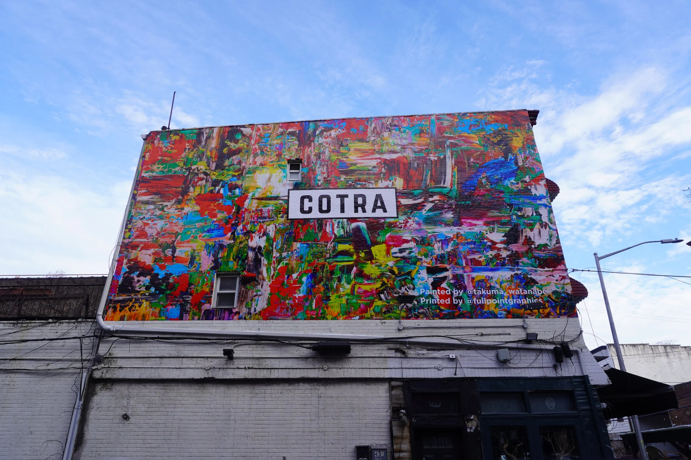
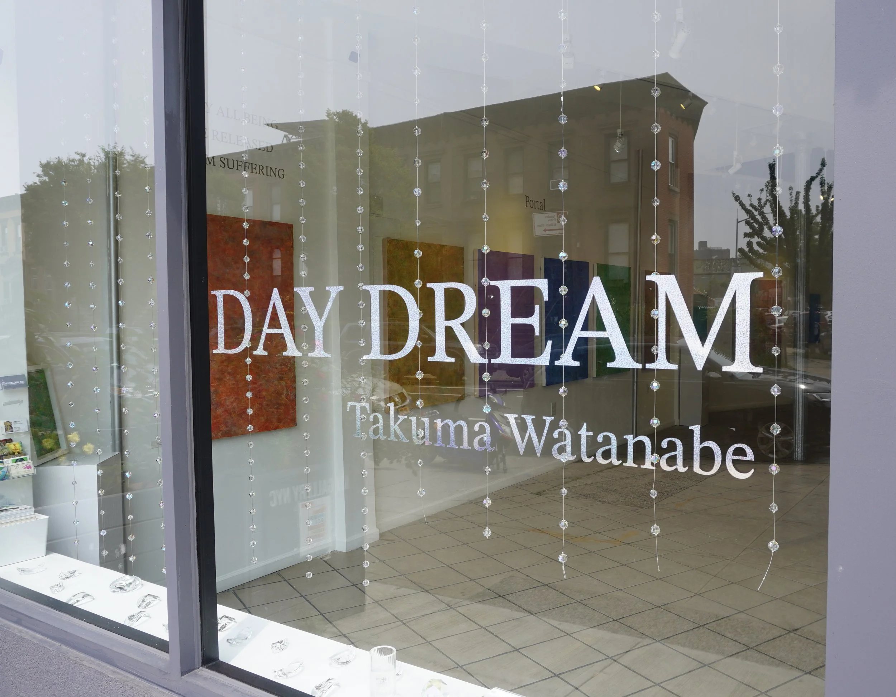
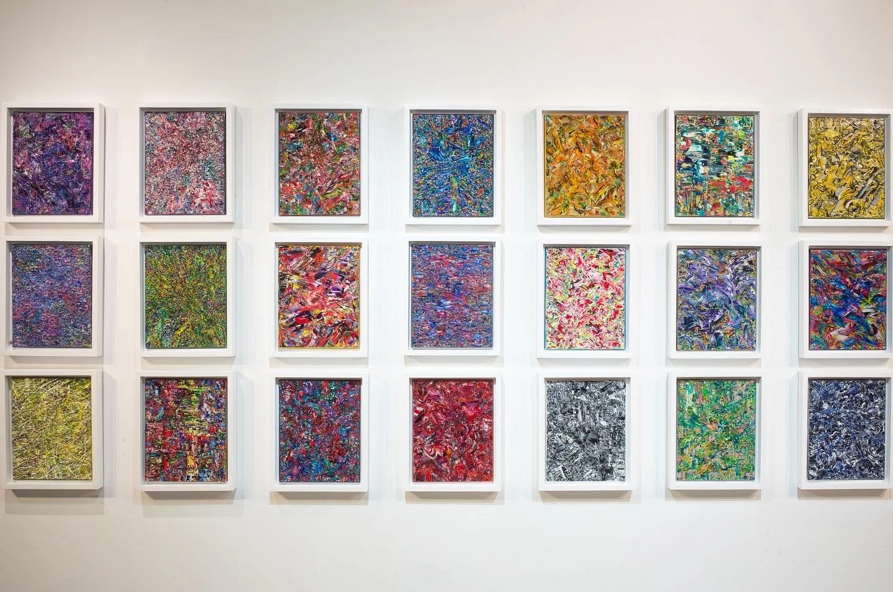

Projectsプロジェクト
Where the work meets the world — solo exhibitions and public commissions in which painting becomes an environment, and perception unfolds in shared space. 作品が世界と出会う場所——絵画が環境となり、共有された空間のなかで知覚がほどけてゆく、個展とパブリックコミッション。

COTRA MuralCOTRA 壁画
A large-scale exterior wall in which the accumulated field of color meets the scale of the street. The painting becomes architecture — light and weather moving across it through the day. 堆積した色の場が、街路のスケールと出会う大規模な外壁。絵画は建築となり——光と天候が一日を通してその表面を移ろってゆく。

DAY DREAMデイドリーム
A solo presentation of the DAY DREAM series — soft fields of accumulated color held at the threshold of recognition, where the seen and the half-remembered exchange places. デイドリーム シリーズの個展——堆積した色のやわらかな場が認識の閾（しきい）にとどまり、見えるものと半ば思い出されるものとが入れ替わる。

Fields of Color色の場
An installation of small-scale works hung as a single constellation — each panel a discrete duration, together forming one continuous field of perception across the wall. 小品を一つの星座のように掛けたインスタレーション——それぞれのパネルが固有の時間であり、壁面全体で一つの連続した知覚の場を形づくる。